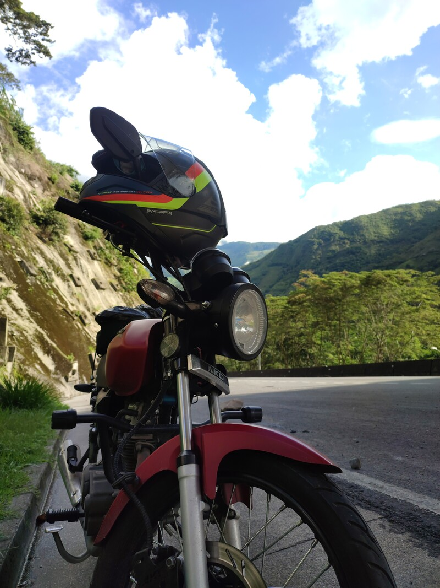

Rainbow
likes
Life is like a rainbow: you need both rain and sunshine to see its colors shine
Rocks
likes
Rocks are silent witnesses of time, holding stories that only the wind and water can whisper
Mountain
likes
At the top of the mountain, we find our inner strength and a perspective that lifts us beyond the clouds
Journey
likes
On the journey of life, every step is a choice that guides us towards new horizons and discoveries